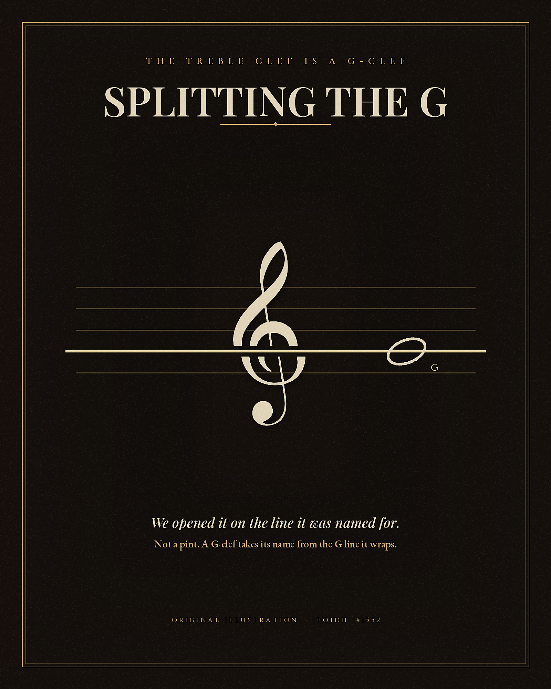

poidh bounty #1552 · split the G your way
Splitting the G, not a pint.

A treble clef is a G-clef: it takes its name from the line it wraps. This poster opens the clef along that line. It is an interpretation of “splitting the G” that does not involve Guinness, a bar, or a letter cut in half.
Original composition, typography, colour, and the split treatment were drawn with Python (Pillow + SVG). The G-clef outline is adapted from Wikimedia Commons File:GClef.svg (public domain, author っ, 27 April 2006).